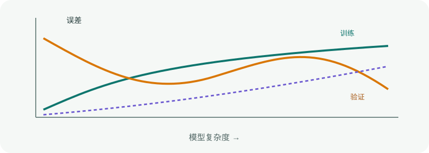

一个模型在训练集上达到 99% 准确率，是否意味着它能在新用户身上表现同样好？机器学习的核心挑战不是记住训练数据，而是控制模型复杂度，让预测在未见数据上仍然可靠。
如果你正在学习机器学习，你会发现：你已经在不知不觉中使用了大量统计学知识。线性回归是统计学，逻辑回归也是统计学。甚至大名鼎鼎的XGBoost，其底层也离不开统计学的损失函数与梯度概念。今天的课程，我们将帮你搭起统计学与机器学习之间的桥梁。

26.1 统计学习 vs 机器学习：同一枚硬币的两面
让我们先把概念理清。统计学习（Statistical Learning）和机器学习（Machine Learning）在研究目标上有很大的重叠。统计学习强调推断（Inference）——我们想知道X如何影响Y，想得到可解释的参数估计。机器学习强调预测（Prediction）——我们关心模型的泛化能力，能否在未知数据上给出准确的预测。
统计学家会说："给我一个模型，我要理解数据生成的机制。"机器学习工程师会说："给我一个模型，我要它在测试集上表现最好。"这两种视角并非对立，而是互补。一个优秀的机器学习工程师，一定懂统计学；一个优秀的统计学家，也一定了解机器学习。
| 机器学习算法 | 对应的统计学基础 |
|---|---|
| 线性回归 | 普通最小二乘（OLS）、极大似然估计（MLE） |
| 逻辑回归 | 广义线性模型（GLM）、比值比（Odds Ratio） |
| Lasso / Ridge | L1 / L2正则化、贝叶斯先验（Laplace / Gaussian） |
| 决策树 / 随机森林 | 方差分解、集成学习（Bagging降低方差） |
| 梯度提升（XGBoost / LightGBM） | 梯度下降、损失函数、逐步逼近 |
| SVM | 最大间隔分类、结构风险最小化 |
| K-Means | EM算法、混合模型 |
| PCA | 特征值分解、协方差矩阵 |
26.2 偏差-方差权衡（Bias-Variance Tradeoff）
这可能是统计学对机器学习最重要的贡献之一。偏差-方差权衡告诉我们：模型的预测误差可以分解为三个部分——偏差（Bias）、方差（Variance）和不可约噪声（Irreducible Error）。
数学上：E[(y - ŷ)²] = Bias(ŷ)² + Var(ŷ) + σ²
- 偏差：模型对真实关系的简化程度。高偏差意味着模型过于简单，发生欠拟合（Underfitting）。例如用线性模型拟合非线性数据。
- 方差：模型对训练数据波动的敏感程度。高方差意味着模型过于复杂，发生过拟合（Overfitting）。例如一个深度的决策树完美记住每个训练样本。
- 不可约噪声：数据本身的随机变异，无论模型多好都无法消除。
理想的模型在偏差和方差之间取得平衡。一个简单的直觉：随着模型复杂度增加，偏差下降，方差上升。总误差呈现U形曲线，最小值在中间某处。
让我们看一个Python示例，用模拟数据来直观展示偏差-方差权衡。
import numpy as np
from sklearn.pipeline import Pipeline
from sklearn.preprocessing import PolynomialFeatures
from sklearn.linear_model import LinearRegression
from sklearn.model_selection import cross_val_score
import matplotlib.pyplot as plt
# 生成模拟数据：真实关系为 y = sin(x) + noise
np.random.seed(42)
X = np.linspace(0, 2 * np.pi, 100)
y = np.sin(X) + np.random.normal(0, 0.2, size=X.shape)
# 用不同多项式阶数拟合，观察偏差和方差
degrees = [1, 3, 5, 10, 15, 20]
for d in degrees:
model = Pipeline([
('poly', PolynomialFeatures(degree=d, include_bias=False)),
('linreg', LinearRegression())
])
scores = cross_val_score(model, X.reshape(-1, 1), y, cv=5,
scoring='neg_mean_squared_error')
mse = -scores.mean()
print(f"Degree {d:2d} | CV MSE = {mse:.4f} (Bias-Variance Tradeoff)")
# degree=1 高偏差欠拟合，degree=15+ 高方差过拟合
# 通常在 degree=5~7 达到最优26.3 正则化：L1/L2与先验分布的对应
正则化（Regularization）是控制模型复杂度的核心手段。如果你学过第22章贝叶斯统计，你会惊喜地发现：正则化本质上就是在引入先验分布。
- L2正则化（Ridge回归）：损失函数加上权重平方和(λ∑w²)。在贝叶斯视角下，这等价于给权重施加了一个高斯先验（Gaussian Prior），即假设权重服从均值为0的正态分布。
- L1正则化（Lasso回归）：损失函数加上权重绝对值之和(λ∑|w|)。在贝叶斯视角下，这等价于给权重施加了一个Laplace先验（Laplace Prior），它会在零点产生尖峰，因此倾向于将不重要特征的权重压缩到0——实现了特征选择。
- Elastic Net：L1和L2的组合，即同时使用高斯先验和Laplace先验的混合。
26.4 交叉验证：如何诚实评估模型
交叉验证可能是统计学送给机器学习最实用的礼物。它的核心思想很简单：不要用训练过的数据来评估模型——那样你会得到过于乐观的估计。
常见方法：
- Holdout验证：将数据分为训练集和测试集（如70%/30%）。简单但浪费数据。
- K折交叉验证（K-Fold CV）：将数据分为K份，轮流用K-1份训练、1份验证。K=5或10最常见。这本质上是对估计量的方差进行控制。
- 留一交叉验证（LOOCV）：K=N的特殊情况，每个样本逐一验证。无偏但计算量巨大。
- 分层交叉验证（Stratified K-Fold）：保持每折中类别比例一致，适合分类问题。
交叉验证在统计学上的合理性在于：通过重复抽样评估模型在不同数据子集上的表现，我们实际上是在估计模型泛化误差的期望——这正是统计学习理论的核心。
from sklearn.model_selection import KFold, cross_val_score
from sklearn.ensemble import RandomForestRegressor
# 用交叉验证选择随机森林的树的数量
X_full = np.random.randn(500, 10)
y_full = X_full[:, 0] + 0.5 * X_full[:, 1] ** 2 + np.random.randn(500) * 0.3
for n_trees in [10, 50, 100, 200, 500]:
rf = RandomForestRegressor(n_estimators=n_trees, random_state=42)
scores = cross_val_score(rf, X_full, y_full, cv=10,
scoring='neg_mean_squared_error')
mse = -scores.mean()
print(f"Trees={n_trees:3d} | 10-Fold CV MSE = {mse:.4f}")26.5 从统计学到XGBoost：梯度提升的统计学视角
梯度提升（Gradient Boosting）是过去十年最成功的机器学习方法之一。XGBoost、LightGBM和CatBoost在Kaggle竞赛中几乎统治了表格数据。但你知道吗？它的核心思想来自统计学中的"加性模型"和"逐步拟合"。
统计学视角： 梯度提升本质上是在做函数空间中的梯度下降。每一步，我们拟合一个弱学习器（通常是树）来逼近损失函数在当前预测值处的负梯度方向。从统计学的角度看：
- 加性模型（Additive Model）：
F(x) = ∑ fₜ(x)，其中每个fₜ是一个基学习器 - 前向分步算法（Forward Stagewise）：每次只优化一个fₜ，固定之前的所有项
- 损失函数（Loss Function）：可以是平方误差（回归）、对数损失（分类）、Huber损失（稳健回归）等
- 正则化：通过树深度、学习率、子采样等控制复杂度——和统计学的偏差-方差权衡完全一致
从统计学的角度看，XGBoost对传统GBDT的改进主要体现在加入了更正式的正则化项（叶节点数量、叶节点权重的L2范数），使得目标函数变成了：
Obj = ∑ Loss(yᵢ, ŷᵢ) + γ·T + λ·∑ wⱼ²
其中T是叶节点数，wⱼ是叶节点权重。这恰恰就是我们在26.3节讲的正则化！
好的，今天的课程到这里。我们从偏差-方差权衡出发，理解了什么是好的模型；学习了正则化如何引入先验知识；掌握了交叉验证这个评估利器；最后从统计学的角度重新审视了XGBoost。下一章我们将进入现代因果推断——一个正在彻底改变数据科学实践的前沿领域。我们下章见！
CORE RELATION
本章核心关系
这是特定平方损失设定下的经典分解直觉；不同损失函数和模型设定下表达会变化。
复杂度提高不等于泛化能力提高
调整模型复杂度，观察定性提示：训练误差下降，但验证误差可能先降后升。
教学模拟：用于理解概念与方向，不替代真实数据分析、正式功效计算或研究设计审查。
TAKEAWAYS
本章要记住的三件事
- 模型过于简单可能欠拟合，过于复杂可能过拟合。
- 正则化通过限制模型复杂度或参数大小来改善泛化。
- 测试集应尽量只用于最终评估；反复调参会让测试集信息泄漏进模型选择。
FURTHER READING
延伸阅读与核对来源
- scikit-learn User Guidescikit-learn
- OpenStax · Introductory Statistics 2eOpenStax
参考来源用于核对概念与方法。涉及具体数据、历史细节或行业案例时，应回到原始研究或官方文档逐项核验。